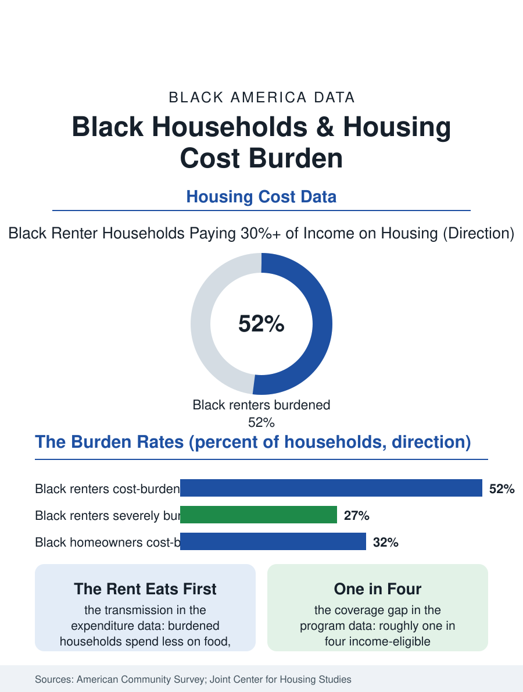

Black Census
Thirty Percent of Everything: The Housing Cost Burden
Half of Black renters pay more than thirty percent of income for housing, and a quarter pay more than half. The cost burden file, where three other files meet.

A household is cost-burdened, in the federal definition, when housing consumes thirty percent or more of income, and severely burdened at fifty. By that measure the American Community Survey counts Black households, renters above all, as the most burdened population in the country: roughly half of Black renters cross the thirty percent line in a typical recent year, and more than a quarter cross the severe line. This article reads the cost burden file, where the housing crisis appears not as an event but as a permanent line item.
Renters at the Front of the Ledger
The renter numbers are the file's core. Black renter households record cost-burden rates several points above white renters and above the national renter average, with the severe burden share, the households paying half or more of income for shelter, running at levels that leave the remainder of the budget below what the food, transport, and health files in this atlas require. The arithmetic is doubly determined: Black median incomes sit below the national line, while the rents in the metropolitan areas where Black renters concentrate have risen at or above the national pace, so the burden is manufactured from both ends. Seniors and single-parent households carry the heaviest rates in the cross-tabulations, the solo elder of the living-alone file paying market rent on a Social Security check, the mother of the family file fitting the month's other necessities into what the lease leaves. Homeowners are not exempt from the file: roughly a third of Black homeowners are cost-burdened when mortgage, taxes, insurance, and utilities are summed, with the burden concentrated among recent buyers at high prices and rates, older owners whose insurance and tax bills climbed out from under fixed incomes, and the owners of the manufactured and inherited homes whose repair costs function as a second mortgage the survey only partially counts.
What the Burden Buys Down
The burden's consequences are recorded in the neighboring files, and the housing literature connects them with unusual directness. Cost-burdened households spend measurably less on food, health care, and retirement saving in the consumer expenditure data, in amounts that track the burden almost dollar for dollar at the margin, which makes the burden a transmission mechanism: the rent eats the grocery budget, the grocery budget becomes the nutrition file, the deferred care becomes the chronic disease file. Residential stability is the second casualty: burdened renters move more often, and their children change schools more often, importing the burden into the education data as mobility effects on achievement that researchers can separate from poverty itself. The eviction file sits at the burden's sharp end, filings concentrating overwhelmingly in the severely burdened population, so that the burden rate functions as a leading indicator for the displacement data the cities file tracks. Against these mechanics the voucher program operates at a scale the appropriations data define starkly: roughly one in four eligible households receives rental assistance, the rest holding the burden privately, which is why the burden statistics have proven so immovable across administrations of both parties and housing cycles in both directions.
The Levers the Data Endorse
The file's closing chapter separates the levers by their evidence. Supply is the long lever: the metros that permitted housing at scale in the last decade show slower rent growth in the survey data, and the burden rates of their Black renters, while still elevated, rose less than in the constrained coastal markets, an effect that compounds across a decade into the difference between a burden and a crisis. Income is the fast lever: the pandemic-era experiment in expanded rental assistance and child payments cut measured burdens visibly in the survey years it operated, demonstrating that the burden responds to transfers at exactly the elasticity the arithmetic predicts. Preservation is the neglected lever: the affordable unsubsidized stock, the older garden apartments and small buildings where Black renters actually live, is being purchased and repriced at a pace the housing data track building by building, and preservation funds that keep those rents within reach address the burden at its actual address. The cost burden file closes on the definition it opened with. Thirty percent is not a law of nature; it is a bookkeeping convention for the point at which shelter begins consuming the rest of a life. Black households cross it at the highest rates in the nation, not because of any single failure, but because the income file, the rent file, and the assistance file all lean the same way at once. The burden is where those three files meet, and it can be unmade from any of the three directions, which the data, characteristically, have already specified.
More in Black Census
The Black Population of the United States: Size, Definitions, and Distribution
The Black population of the United States totals 52.8 million — 15.4 percent of the nation. How the Census Bureau defines and counts the population, and where it lives.
Black Median Household Income in the United States
Black median household income stands at $56,490 in the Census Bureau's annual income report — how the figure is measured, how it compares, and what drives it.
The Black Poverty Rate: Levels, Children, and the Long Trend
The official Black poverty rate is 17.1 percent — against 11.1 percent nationally and 7.7 percent for non-Hispanic White Americans. How poverty is measured and what the data show.
Source: U.S. Census Bureau, American Community Survey housing cost data; Harvard Joint Center for Housing Studies, State of the Nation's Housing reports.